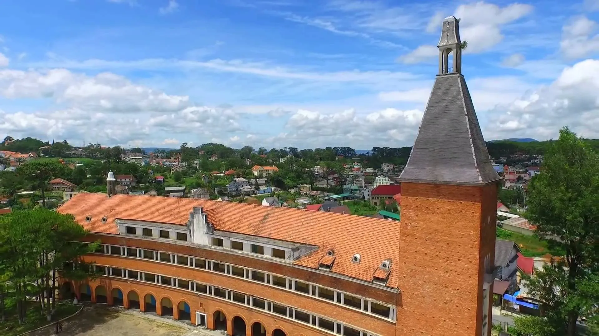
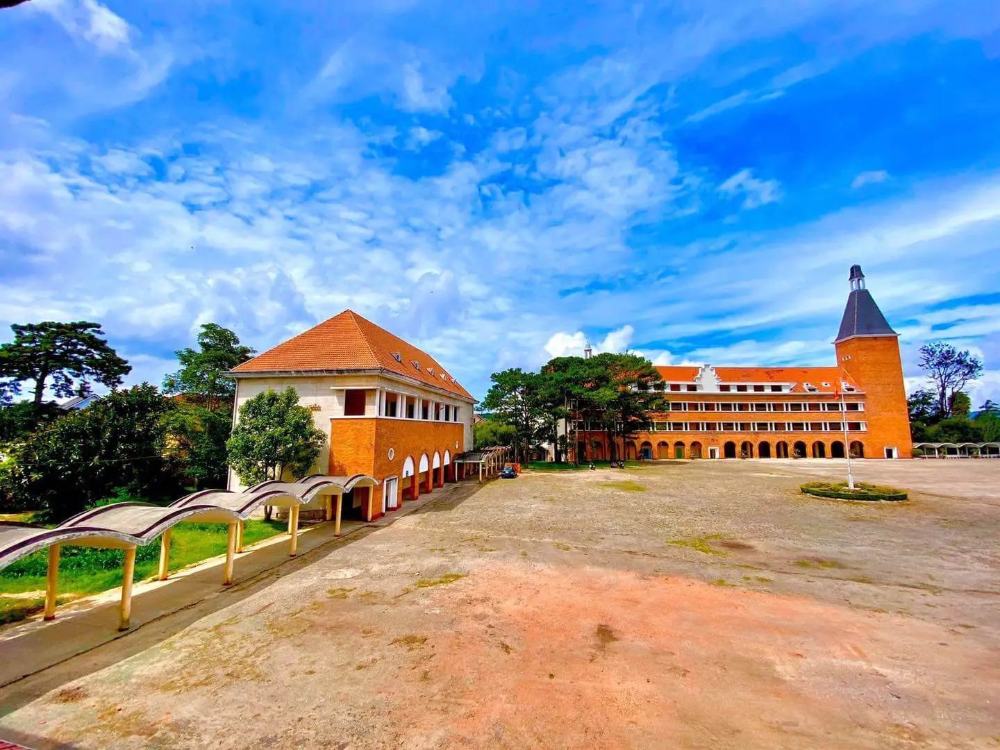
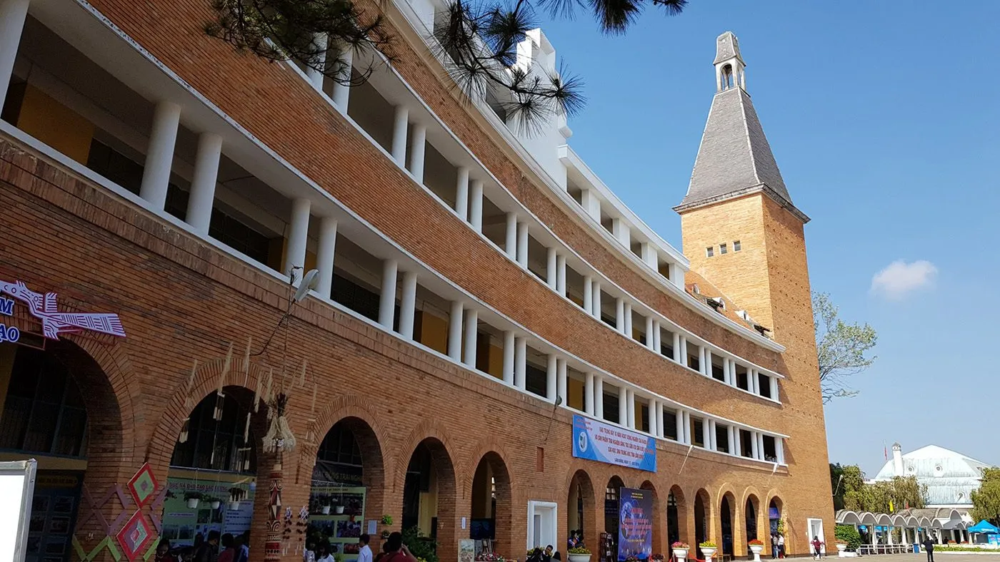
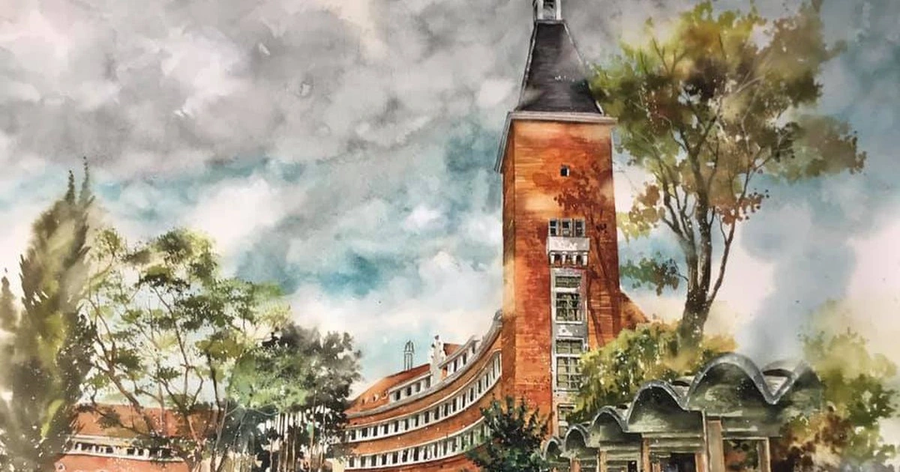

Khám phá Cao đẳng Sư phạm Đà Lạt – Kiến trúc cổ ấn tượng

Mục lục bài viết
- 1. Toàn cảnh review Trường Cao đẳng Sư phạm Đà Lạt – Ngôi trường “gây sốt” giữa lòng phố núi
- 2. Trường Cao đẳng Sư phạm Đà Lạt – Hành trình gần 100 năm lịch sử và kiến trúc độc đáo
-
3. Tất tần tật những điều thú vị về Trường Cao đẳng Sư phạm Đà Lạt có thể bạn chưa biết
- 3.1. Vẻ đẹp kiến trúc cổ kính pha nét lãng mạn thời Pháp của trường Cao Đẳng Sư phạm Đà Lạt
- 3.2. Giảng đường Cao đẳng Sư phạm Đà Lạt hình vòng cung – cuốn sách tri thức giữa lòng thành phố
- 3.3. Tháp chuông Cao đẳng Sư phạm Đà Lạt – Biểu tượng kiêu hãnh giữa trời Đà Lạt
- 3.4. Khoảng sân trường Cao đẳng Sư phạm Đà Lạt lớn – không gian sinh hoạt ngoài trời đậm chất châu Âu
- 3.5. Những dãy nhà đậm dấu ấn kiến trúc châu Âu của Cao đẳng Sư phạm Đà Lạt giữa lòng thành phố mù sương
- 4. Trường Cao đẳng Sư phạm Đà Lạt có mở cửa cho khách tham quan không?
- 5. Ghé Tiệm Nướng & Chill Xóm Lèo – “Sạc pin” sau hành trình khám phá Cao đẳng Sư phạm Đà Lạt
Bạn đã sẵn sàng cho một chuyến tham quan đầy cảm hứng tại ngôi trường đẹp như mơ giữa lòng Đà Lạt chưa? Hôm nay, hãy cùng mình “vi vu” đến trường Cao đẳng Sư phạm Đà Lạt – nơi không chỉ nổi tiếng với kiến trúc độc đáo mà còn là điểm check-in cực hot được giới trẻ săn đón. Chắc chắn hành trình lần này sẽ mang đến cho bạn nhiều bất ngờ thú vị. Còn chờ gì nữa, xách ba lô lên và khám phá cùng mình ngay thôi!

Tuy không quá rộng lớn, nhưng mỗi góc nhỏ trong khuôn viên trường đều mang đậm dấu ấn thời gian, từ dãy phòng học xây bằng gạch đỏ cổ kính cho đến khoảng sân xanh mát rợp bóng thông già. Đặc biệt, toà nhà chính với mái vòm cong độc đáo là điểm nhấn kiến trúc khiến ai đến đây cũng không khỏi trầm trồ. Đứng giữa không gian tĩnh lặng và đầy hoài niệm ấy, bạn sẽ có cảm giác như đang lạc vào một thước phim xưa cũ giữa lòng thành phố sương mù.
1. Toàn cảnh review Trường Cao đẳng Sư phạm Đà Lạt – Ngôi trường “gây sốt” giữa lòng phố núi
Địa chỉ: 29 Yersin, phường 10, thành phố Đà Lạt, tỉnh Lâm Đồng
Tọa lạc trên con đường Yersin đầy yên bình, cách trung tâm Đà Lạt chỉ hơn 2km, Trường Cao đẳng Sư phạm Đà Lạt từ lâu đã trở thành điểm đến yêu thích của rất nhiều du khách, đặc biệt là giới trẻ. Với lối kiến trúc cổ điển mang đậm dấu ấn Pháp và không gian xanh mát, thoáng đãng, nơi đây chẳng khác gì một “phim trường ngoài trời” lý tưởng cho những ai yêu thích chụp ảnh sống ảo. Mỗi góc trường đều có thể trở thành một khung hình “xịn sò” khiến bạn chỉ cần giơ máy lên là đã có ngay bức ảnh đẹp.

Một điểm cộng lớn là trường hoàn toàn miễn phí vé vào cổng cho khách tham quan. Tuy nhiên, để đảm bảo an ninh và giữ gìn không gian chung, bạn sẽ cần xuất trình giấy tờ tùy thân như chứng minh nhân dân hoặc căn cước công dân tại cổng bảo vệ. Yên tâm là khi rời đi, bạn sẽ được nhận lại ngay nhé!
Với vị trí dễ tìm và thuận tiện di chuyển, bạn có thể đến trường bằng xe máy hoặc ô tô. Cung đường phổ biến thường được nhiều người lựa chọn là: Từ trung tâm thành phố – đi theo Hồ Tùng Mậu – Trần Quốc Toản – rẽ vào Yersin. Sau đó, chạy thẳng thêm khoảng 800m là bạn sẽ thấy ngôi trường nổi bật hiện ra ngay trước mắt. Ngoài ra, nếu không rõ đường, bạn hoàn toàn có thể nhờ người dân chỉ lối – người Đà Lạt thân thiện lắm nên đừng ngại hỏi nhé!
2. Trường Cao đẳng Sư phạm Đà Lạt – Hành trình gần 100 năm lịch sử và kiến trúc độc đáo
Trường Cao đẳng Sư phạm Đà Lạt không chỉ là một điểm đến nổi tiếng tại thành phố sương mù, mà còn là một trong những công trình kiến trúc mang đậm dấu ấn lịch sử lâu đời. Ngôi trường được xây dựng từ năm 1927, do kiến trúc sư người Pháp Moncet thiết kế, ban đầu nhằm phục vụ cho con em người Pháp và các gia đình thượng lưu tại Việt Nam trong thời kỳ đó.
Sau một thời gian hoạt động, trường được Tòa Giám Mục Kon Tum tiếp quản để sử dụng làm nơi đào tạo các chủng sinh. Trải qua gần một thế kỷ, trường đã không ngừng thay đổi và phát triển, đồng thời trải qua bốn lần đổi tên trước khi chính thức mang tên như hiện nay.

Trước đây, ngôi trường từng có tên gọi là Petit Lycée Đà Lạt, sau đó đổi thành Grand Lycée de Đà Lạt, rồi Grand Lycée Yersin – để tưởng nhớ bác sĩ Alexandre Yersin, người có nhiều đóng góp cho y học và khoa học Việt Nam. Mãi đến sau này, tên gọi Cao đẳng Sư phạm Đà Lạt mới được sử dụng chính thức và duy trì cho đến ngày nay.
Không chỉ là nơi đào tạo giáo viên, trường còn là một di tích kiến trúc cấp quốc gia, đồng thời vinh dự được Hội Kiến trúc sư thế giới (UIA) công nhận là một trong 100 công trình kiến trúc tiêu biểu nhất thế giới của thế kỷ XX. Kiến trúc nổi bật với mái ngói đỏ uốn cong, dãy lớp học xây bằng gạch trần và tòa nhà hình vòng cung độc đáo đã biến nơi đây thành điểm dừng chân không thể bỏ lỡ khi đến với Đà Lạt.
3. Tất tần tật những điều thú vị về Trường Cao đẳng Sư phạm Đà Lạt có thể bạn chưa biết
3.1. Vẻ đẹp kiến trúc cổ kính pha nét lãng mạn thời Pháp của trường Cao Đẳng Sư phạm Đà Lạt
Ít ai ngờ rằng giữa lòng Đà Lạt lại tồn tại một công trình mang đậm dấu ấn kiến trúc châu Âu như Trường Cao đẳng Sư phạm Đà Lạt. Được xây dựng chủ yếu từ các loại vật liệu nhập khẩu từ Pháp, ngôi trường nổi bật với mái dốc phủ ngói thạch bản xanh đen, tường gạch trần đỏ, và hệ thống cửa sổ mái màu cam gạch đồng điệu.

Trải qua thời gian, một số chi tiết như mái ngói hay bức tường đã có sự thay đổi nhẹ để phù hợp với nhu cầu bảo tồn. Dẫu vậy, tổng thể kiến trúc vẫn được giữ gìn gần như nguyên vẹn, như một “nhân chứng lịch sử” lặng lẽ chứng kiến bao thăng trầm của thành phố mù sương.
Một điều đáng tiếc là tháp chuông – điểm nhấn kiến trúc trên tòa nhà hình vòng cung – nay đã không còn nguyên trạng. Chiếc đồng hồ cổ từng được gắn trên tháp đã mất, và thay vào đó là một khoảng gạch trũng như vết tích thời gian còn lưu lại.
3.2. Giảng đường Cao đẳng Sư phạm Đà Lạt hình vòng cung – cuốn sách tri thức giữa lòng thành phố
Giảng đường chính của trường là một công trình kiến trúc độc đáo hiếm thấy. Tòa nhà được thiết kế theo hình vòng cung, kéo dài khoảng 77m ở mặt trước và 90m ở mặt sau, với ba tầng chia thành 24 phòng học.

Hình dáng vòng cung không chỉ mang tính thẩm mỹ mà còn là biểu tượng cho một cuốn sách đang mở, thể hiện tinh thần học hỏi, khát vọng vươn tới tri thức của nhiều thế hệ sinh viên. Chính thiết kế này đã góp phần tạo nên bầu không khí học thuật đặc biệt – vừa cổ kính, vừa khơi gợi cảm hứng sáng tạo.
3.3. Tháp chuông Cao đẳng Sư phạm Đà Lạt – Biểu tượng kiêu hãnh giữa trời Đà Lạt
Nằm ở cuối giảng đường là ngọn tháp chuông cao 54m – công trình từng được xem là biểu tượng của nền văn hóa Pháp tại Đà Lạt. Được lợp bằng ngói thạch bản và mang dáng dấp pha trộn giữa cổ điển và hiện đại, tháp chuông toát lên vẻ đẹp lãng mạn đầy quyến rũ, khiến nhiều người liên tưởng đến những lâu đài ở châu Âu.

Từng có thời điểm, người ta có thể leo lên đỉnh tháp để ngắm nhìn toàn cảnh thành phố mờ sương trải dài phía xa. Tuy nhiên, hiện nay lối lên tháp đã bị khóa vì lý do an toàn. Dẫu vậy, chỉ cần đứng từ khoảng sân phía dưới, bạn cũng đủ cảm nhận được vẻ uy nghi và thi vị của công trình này – như một bàn tay đang vươn cao ôm trọn cả bầu trời Đà Lạt.
3.4. Khoảng sân trường Cao đẳng Sư phạm Đà Lạt lớn – không gian sinh hoạt ngoài trời đậm chất châu Âu
Ngay giữa khuôn viên trường là một khoảng sân rộng lớn – không chỉ đơn thuần là nơi rèn luyện thể lực cho sinh viên, mà còn như trái tim của toàn bộ ngôi trường. Đây là địa điểm thường xuyên diễn ra các hoạt động ngoại khóa, thể thao và giáo dục thể chất.

Điểm nổi bật của khu vực này chính là hàng thông xanh mướt được trồng dọc theo các lối đi, tạo cảm giác như đang bước vào một khuôn viên trường đại học nào đó giữa lòng châu Âu. Màu xanh rì của những tán lá kết hợp với không khí trong lành đặc trưng của Đà Lạt khiến nơi đây luôn mang lại cảm giác thư thái, dễ chịu cho cả người học lẫn khách tham quan.
3.5. Những dãy nhà đậm dấu ấn kiến trúc châu Âu của Cao đẳng Sư phạm Đà Lạt giữa lòng thành phố mù sương
Ngoài giảng đường chính hình vòng cung, trong khuôn viên trường còn có nhiều dãy nhà được xây dựng đồng bộ với nhau, cao từ hai đến ba tầng. Những tòa nhà này nổi bật với tông màu vàng cam ấm áp, hệ mái ngói đỏ đặc trưng và các cửa sổ gỗ được sơn xanh, vừa hài hòa vừa tạo điểm nhấn kiến trúc độc đáo.
Các dãy nhà được thiết kế giản dị mà tinh tế với phần chân tường trệt là những hàng cột gạch nung tạo hình vòm cung, mang đến cảm giác cổ điển nhưng không hề nặng nề. Phần hành lang nối giữa các khối nhà sử dụng hệ cột đôi sơn trắng, vừa giúp không gian thông thoáng vừa tạo nên nhịp điệu mềm mại trong bố cục tổng thể.

Điều thú vị là sự pha trộn phong cách kiến trúc giữa Thụy Sĩ và Pháp trong từng khu vực: nếu các phòng học, hành chính, phòng thí nghiệm… mang đường nét của kiến trúc Thụy Sĩ với sự chắc chắn và gọn gàng, thì khu vực hội trường, phòng hiệu trưởng hay nhà nghỉ lại mang nhiều nét đặc trưng của các trường học Pháp thời trước, với mái ngói nghiêng và kết cấu trang nhã, lãng mạn.
4. Trường Cao đẳng Sư phạm Đà Lạt có mở cửa cho khách tham quan không?
Dù là một trong những điểm đến nổi bật trong danh sách các công trình kiến trúc ấn tượng tại Đà Lạt, Trường Cao đẳng Sư phạm Đà Lạt hiện không mở cửa đón khách tham quan.

Trước đây, ngôi trường từng là điểm dừng chân quen thuộc của nhiều du khách, đặc biệt là giới trẻ yêu thích không gian cổ kính và nghệ thuật nhiếp ảnh. Tuy nhiên, do lượng khách ghé thăm ngày càng đông, việc tham quan không kiểm soát đã ảnh hưởng đáng kể đến cảnh quan khuôn viên cũng như hoạt động học tập, giảng dạy của sinh viên và giảng viên.
Vì lý do đó, từ tháng 4 năm 2019, nhà trường đã ra thông báo tạm dừng tiếp đón du khách. Mục tiêu chính là bảo vệ kiến trúc cổ, đảm bảo môi trường học tập và sinh hoạt nội bộ diễn ra bình thường, không bị xáo trộn.
5. Ghé Tiệm Nướng & Chill Xóm Lèo – “Sạc pin” sau hành trình khám phá Cao đẳng Sư phạm Đà Lạt
Sau khi lang thang chiêm ngưỡng nét đẹp cổ kính của Trường Cao đẳng Sư phạm Đà Lạt – một biểu tượng kiến trúc Pháp giữa lòng phố núi – còn gì tuyệt vời hơn là tìm một không gian ấm cúng, thư giãn để nghỉ ngơi và thưởng thức ẩm thực đặc trưng của xứ lạnh?
Tiệm Nướng & Chill Xóm Lèo chính là lựa chọn lý tưởng để bạn dừng chân, “nạp năng lượng” sau buổi khám phá đầy cảm hứng.
🔥 Không gian đậm chất Đà Lạt – ấm cúng mà không kém phần cá tính
Nằm trên đường Huỳnh Tấn Phát, Phường 11, không quá xa trung tâm, quán mang đến cảm giác gần gũi, mộc mạc giữa không khí se lạnh đặc trưng của cao nguyên. Với cách bài trí mang đậm tinh thần “chill nhẹ nhàng”, nơi đây thích hợp để ngồi quây quần bên bạn bè, vừa ăn vừa trò chuyện và thư giãn sau hành trình khám phá thành phố.
🥢 Món nướng thơm lừng – Hương vị đậm đà khiến bạn khó quên
Thực đơn tại đây phong phú với nhiều món nướng hấp dẫn, đặc biệt là các loại thịt được ướp theo phong cách riêng, chuẩn vị Đà Lạt. Ăn kèm với rau xanh tươi mát và nước chấm “có tâm”, mỗi món ăn đều khiến vị giác bùng nổ. Dù bạn muốn ăn no nê hay chỉ đơn giản là lai rai vài món cho ấm bụng, quán vẫn có đủ lựa chọn phù hợp.
🧑🍳 Dịch vụ thân thiện – Đúng chất hiếu khách Đà Lạt
Một điểm cộng lớn khiến thực khách nhớ mãi không quên chính là sự nhiệt tình, chu đáo của nhân viên. Từ lúc bước vào quán đến khi rời đi, bạn sẽ luôn cảm thấy được chào đón như người thân lâu ngày gặp lại – một nét dễ thương rất “Đà Lạt”.

📌 Thông tin liên hệ:
-
Địa chỉ: 113 Huỳnh Tấn Phát, Phường 11, Đà Lạt
-
Hotline: 076.45.27.336 – 0899.42.8434 – 0902.91.2240
-
Đặt Bàn: Tại Đây
-
Google Map: Xem trên bản đồ
📍 Lưu ý nhỏ: Nếu bạn muốn có chỗ ngồi đẹp với góc chill nhìn ra khung cảnh lãng mạn, hãy đến sớm – nhất là vào các buổi tối hoặc cuối tuần!
Sau một ngày khám phá vẻ đẹp cổ kính và đậm chất kiến trúc châu Âu tại Trường Cao đẳng Sư phạm Đà Lạt, đừng quên tự thưởng cho mình một bữa tối ấm cúng tại Tiệm Nướng & Chill Xóm Lèo – nơi lý tưởng để kết thúc hành trình đầy cảm hứng giữa lòng phố núi. Không gian chill nhẹ, món nướng thơm lừng cùng sự thân thiện từ con người Đà Lạt chắc chắn sẽ mang đến cho bạn một trải nghiệm trọn vẹn, đáng nhớ trong chuyến đi này.